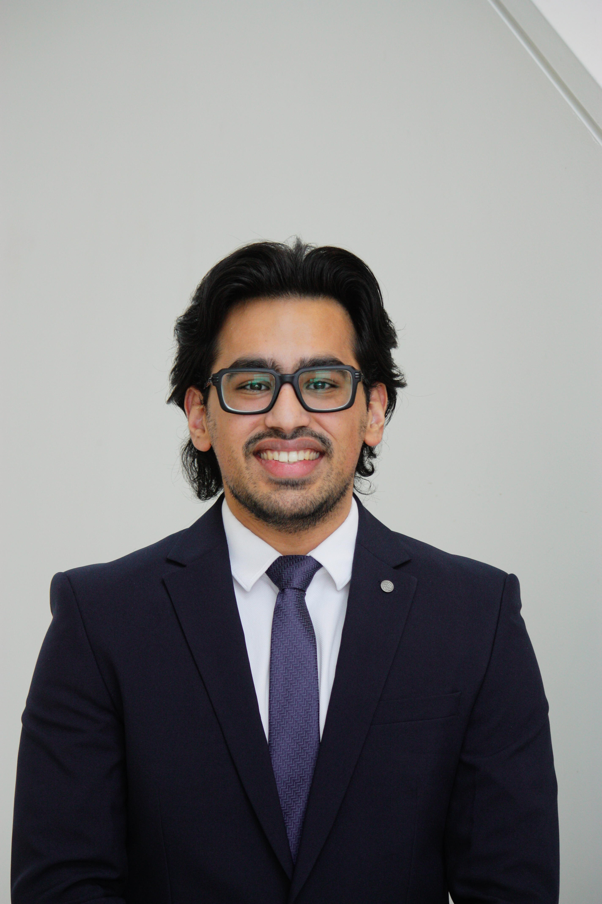

Project 01 / In progress
Temperature control system
Developing a thermal haptic-feedback system for a myoelectric prosthetic hand, designed to communicate temperature through controlled heating and cooling.
Hover for details →01
I design, iterate, and prototype systems that turn ambitious ideas into clear, reliable physical solutions.

Profile / 01Selected work
A selection of systems where engineering decisions need to hold up beyond the screen.
Project 01 / In progress
Developing a thermal haptic-feedback system for a myoelectric prosthetic hand, designed to communicate temperature through controlled heating and cooling.
Hover for details →Project 02 / January 2026 – April 2026
A portable DC electronic load developed for internal testing, using a compact Altium PCB and linear MOSFET control to manage power dissipation in a smaller footprint.
← Hover for detailsProject 03 / Sidus Robotics September 2024 - September 2026
Led the mechanical design of a lightweight Mars rover chassis and suspension system, balancing structural strength, available materials, and build cost.
Hover for details →Project 04 / Eastern Edge Robotics
Designed a compact, lightweight, and structurally robust ROV chassis and thruster mounts for Eastern Edge Robotics, engineered to withstand multi-axial loading.
← Hover for detailsOperating environment
Contact
I’m always interested in meeting people working on challenging hardware, robots, and products.
Start a conversation ↗Email address and social links to be added.